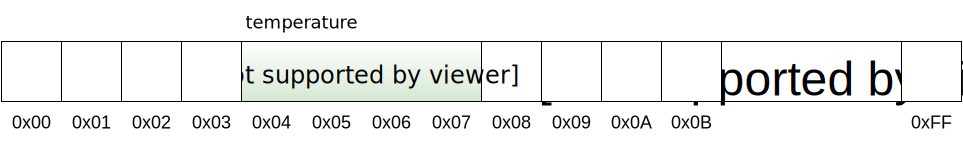

Variables, Operators, Common Errors
📚 Gaddis (Ch. 2)
Variables, Operators, Common Errors
Gaddis (Ch. 2)
The Big Picture
All programming languages must provide certain functionality:
- Temporary data storage and retrieval.
- How is data stored in RAM?
- Operators that can be applied to the data.
- What can I do to manipulate the data, and how?
- Input and Output
- Where does the data come from, and how?
- Control Structures
- Conditional execution and repetition.
To learn a language, figure these things out first.
Where to Start?
We will begin by examining the way C++ provides for temporary data storage and retrieval.
- All non-trivial programs act by storing and manipulating data.
- Data is stored in the computer’s RAM (Random Access Memory) while a program is using it.
- RAM is volatile (it only works when the machine is on).
Computer Memory
- The smallest division of memory is a byte (8-bits). All storage sizes are specified in bytes.
- Each byte of memory has a number associated with it, called its memory address.
- This address is what the machine uses to refer to data.
- Physical memory is limited, but logical memory (our view of memory as programmers) is usually treated as if it were unlimited.
Logical Memory
Variables
Since humans are not good with numbers (like memory addresses), C++ provides us with a way to use names instead.
- variable : a named storage location for data within a program
- variable declaration : a statement used to tell the compiler that a new variable should be created; contains the identifier and type for the variable.
The declaration statement above tells the compiler to create a variable named temperature that will store an integer.
Data Types
So what types of things can we store in variables?
| Type Name | Description | Literal Examples |
|---|---|---|
int |
Integer value | 96, -33 |
double |
Floating-point (Real number) value | 3.14, -1.0 |
char |
Single character | 'a', '4' |
bool |
Boolean value | true, false |
std::string |
String value | "Hello", "ocean" |
Identifiers
An identifier is a name that is permissible for variables, classes, functions, etc. in C++.
You must obey the following 3 Rules For Identifiers:
- Identifiers may not begin with a digit.
- Identifiers must consist only of letters, digits, and underscores.
- An identifier must not be a keyword.
Additional Info: Identifers (and everything else) in C++ are case sensitive
Keywords
A keyword is a word that has a specific, reserved meaning in a programming language. Also known as reserved words in some texts.
C++ Consists of all of the keywords from the C language, plus new ones that are related to C++’s object-oriented focus.
There are 92 keywords in C++ (as of the C++20 standard). C++98 had 74.
C++ Keywords
(1): Extended operator synonyms (2): New in C++20
alignas constinit (2) int static_assert
alignof continue long static_cast
and (1) co_await (2) mutable struct
and_eq (1) co_return (2) namespace switch
asm co_yield (2) new template
auto decltype noexcept this
bitand (1) default not (1) thread_local
bitor (1) delete not_eq (1) throw
bool do nullptr true
break double operator try
case dynamic_cast or (1) typedef
catch else or_eq (1) typeid
char enum private typename
char8_t (2) explicit protected union
char16_t export (2) public unsigned
char32_t extern register using
class false reinterpret_cast virtual
compl (1) float requires (2) void
concept (2) for return volatile
const friend short wchar_t
const_cast goto signed while
consteval (2) if sizeof xor (1)
constexpr inline static xor_eq (1) Declaration
Declaring a variable allows the compiler to reserve memory for the data, as well as managing the association between the data’s memory address and the identifier chosen to represent the variable in the program.
The declaration above produces the situation in memory shown below:
Variable Declaration
Declaration
- Declaring a variable tells the compiler the name and type of the data.
- The compiler now also knows the amount of memory required.
- You can find out with the
sizeof()operator:cout << sizeof(temperature);Will produce “4”…
- Declaring a variable does not specify what value the variable will contain!
- The variable will contain whatever value happened to be in that location in memory.
- Memory is constantly recycled, so this is essentially garbage.
- The variable will contain whatever value happened to be in that location in memory.
Initialization
Initialization refers to storing a value in a variable for the first time.
- Variables always begin in an uninitialized state.
Example:
The statement above declares a variable named temperature and initializes temperature to contain the value 82.
Example
The auto Keyword
- C++11 added the ability for a variable declaration to get its type information automatically based on its initialization value.
- The
autokeyword may be used in place of the variable’s type when this behavior is desired.
- The
Example
Here, interestRate will be of type double and stockCode will be type char — the compiler can determine this by examining the type of the literals used to initialize the variables.
When to use auto
- The
autokeyword is intended to simplify declaration of intermediate variables that have very complex types.- In general, do not use
autoto declare variables whose lifetime is more than a few lines. - In general, do not use
autoto declare variables whose type is “simple” (a built-in or primitive type).
- In general, do not use
- Goal: Use
autowhenever it increases the readability of the code, avoid it when it decreases the code’s readability.
Variable Lifetime
Variable names (and all other names as well) have a “life span” within the context of the program code.
- scope - an identifier’s scope refers to the section of the program in which the identifier is defined.
- C++ has six kinds of scope:
- global scope - globally-scoped identifiers are known from the point at which they are declared until the end of the program.
- These are defined outside any function (outside any block).
- local scope - locally-scoped identifiers are known from the point at which they are declared until the end of the block in which they are declared.
- Almost all variables we use will be local.
- statement scope - Names declared in a for, if, while, or switch statement are visible until the end of the statement block.
- This behaves like a special case of local scope.
- class scope - Names of class members have class scope, which extends throughout the class definition regardless of the point of declaration. Class member accessibility is further controlled by the
public,private, andprotectedkeywords. - namespace scope - A name that is declared within a namespace, outside of any class or enum definition or function block, is visible from its point of declaration to the end of the namespace.
- function scope - A label has function scope, which means it is visible throughout a function body even before its point of declaration.
- global scope - globally-scoped identifiers are known from the point at which they are declared until the end of the program.
Assignment
- Variables may be re-used by changing their value.
- The C++ assignment operator is
=- It should always be read as “assigned” or “is assigned”.
- It should never be read as “equals”!
Example:
int temperature = 82;
std::cout << "Initial temperature: " << temperature << "\n";
temperature = 75; // change the value of temperature to 75
std::cout << "Temperature now: " << temperature << "\n";The third line should be read as “temperature is assigned 75”.
Type Compatibility and Coercion
- The type of a variable must always match the type of the data you are storing in it.
- Failure to match the type can lead to errors.
- Some type conversion is possible, and some will take place automatically.
- A less-precise type can usually be automatically converted to a more-precise type for storage.
- This is called type coercion.
- It does not work the other way!
- You can manually convert a value to a different type by casting:
static_cast<int>(3.14)Produces the value3
- A less-precise type can usually be automatically converted to a more-precise type for storage.
Operators
- C++ Operators can be divided into the following families:
- Assignment Operators
- Mathematical Operators
- Relational Operators
- Logical Operators
- Stream Operators
- Other Operators
- We have seen the basic assignment operator (
=) and the stream insertion operator (<<). - Now, let’s look at the stream extraction operator…
Stream Extraction
- The
>>operator is the C++ stream extraction operator. - It takes a value from the stream on the left (often we use
std::cin) and places it into the variable on the right:
- Notice that the stream extraction operation works like assignment, except that the new value comes from a stream.
std::cinis the standard input stream (usually attached to the keyboard)- Now let’s visit the mathematical operators…
C++ Mathematical Operators
Operator Meaning Expression Result
------------------------------------------------------
+ Addition 3 + 4 7
- Subtraction 4 - 6 -2
- Negation (unary -) -3 + 1 -2
* Multiplication 3 * 5 15
/ Division 8 / 2 4
% Modulus (remainder) 7 % 4 3Beware of the division operator!
3 / 4evaluates to0!- If
/is operating on integers, it performs integer division.
- If
3.0 / 4.0yields0.75, as expected.- If either the dividend or divisor is a floating-point type, the answer will be as well.
Operator Precedence
& Associativity:
Shown from highest to lowest:
Operator(s) Associativity
-----------------------------
- (unary) right-to-left
*, /, % left-to-right
+, - left-to-right
= right-to-left- Math operators have the same precedence rules as in algebra.
- Assignment has a very low precedence (it tends to happen last).
- Parentheses may be used to force precedence (just like in algebra).
Expressions
An expression may consist of one or more operations on data, and will evaluate to a result whose type is the most precise type involved in the expression.
(This is highly simplified… but is true most of the time.)
Example:
The const Modifier
A type modifier is a C++ keyword that is used in conjunction with a type name to change that type’s properties in some way.
The const type modifier changes a declaration statement from a variable declaration to a constant declaration.
The value of a constant can never be changed once it has been initialized.
const Example
- Constants are useful for things like mathematical constants.
- In these cases, it is OK to define them globally.
- Avoid defining non-
constvariables globally!
- Avoid defining non-
Documentation
In addition to comments in the code, the program itself should have documentation to explain the “big picture”.
Each development team/company will have its own standards for documentation. We have developed a set of standards that are similar to industry practice.
See the documentation guidelines that your code must meet on the course website.
Programming Errors
Programmers are human. [citation needed]
Errors are unavoidable. Learning to expect, detect, and fix those errors is a key component of learning to program.
- Types of Errors
- Syntax Errors
- Caused by incorrect syntax: rules of spelling, grammar, and punctuation for a language.
- the compiler often detects these easily.
- Semantic Errors
- Semantic errors caused by mis-using the language in some way; these are not caught by the compiler, and must be detected at runtime.
- Logical Errors
- Logical errors like semantic errors, but error is in the logic, not the implementation.
- Syntax Errors
Tips and Tricks
- Compile early, compile often.
- Write small amounts, then compile/test/continue.
- The first error is the only one that matters!
- Always fix the first error before moving on to other errors.
- Re-compile after fixing the error, then repeat the process.
- Pay attention to line numbers.
- The compiler will tell you which line it was examining when it found the error.
- The line containing the error will either be that line or a line above that point in the program.
- Start with the flagged line, work your way upward a line at a time.
- The line containing the error will either be that line or a line above that point in the program.
- The compiler will tell you which line it was examining when it found the error.

Variables, Operators, Common Errors

CS 50x2 Accelerated Programming Series
Comments
Any line beginning with
//is a single-line comment in C++. The compiler will simply ignore the//and any code following it until the end of the line./*and*/create block comments in C++. Anything between a/*and its corresponding*/will be ignored. Block comments may span multiple lines.